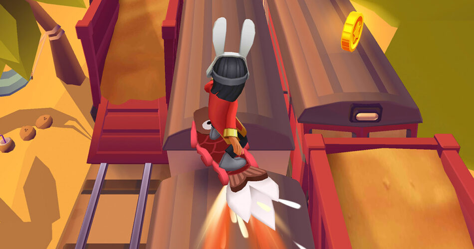
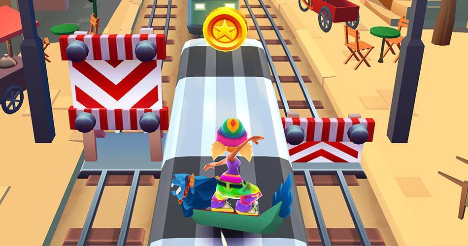
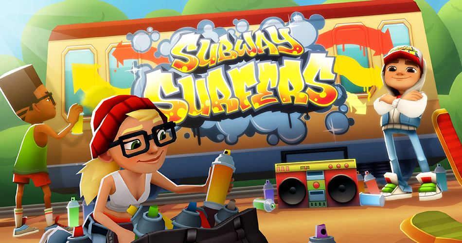

O que é Subway Surfers?

Subway Surfers é um jogo de corrida infinita desenvolvido por dois estúdios dinamarqueses: Kiloo e SYBO Games. O título foi lançado em 2012 para dispositivos móveis com sistema operacional iOS e Android.
De lá pra cá, o game se tornou uma das produções mais populares de todos os tempos, com mais de um bilhão de downloads em todo o mundo.
A premissa é simples: nós assumimos o papel de um jovem grafiteiro que é pego pela polícia após pichar um trem numa estação de metrô. A meta, portanto, é sobreviver o maior tempo possível enquanto o personagem desvia de obstáculos pelo cenário.
O que significa Subway Surfers?

Traduzindo para o português, Subway Surfers seria algo como “Surfistas de Metrô“, pois no jogo o personagem anda em cima de vagões para fugir da polícia.
Essa inspiração, entretanto, não surgiu por um acaso. Na vida real, algumas pessoas gostam de ficar em cima de metrôs, trens e até mesmo ônibus. Essa última prática, inclusive, é bem comum no Brasil.
Embora seja um hábito ilegal – e um tanto quanto perigoso – esse costume faz parte da cultura das ruas, não só em nosso país, mas no planeta inteiro.
A triste origem de Subway Surfers

Em 2022, foi ventilada uma teoria de que o jogo é uma triste homenagem ao filho de um dos desenvolvedores. A criança teria falecido em um trágico acidente de skate nos trilhos de um trem. Daí a inspiração para a gameplay de Subway Surfers.
Esse boato foi desmentido algum tempo depois por Mathias Gredal, dono do estúdio SYBO. Ele esclareceu que o game é sim uma homenagem, mas à cultura underground de uma maneira geral.
Os criadores do jogo queriam que a produção explorasse temáticas de rua, como grafite, skate e moda street. Por isso os personagens e ambientes foram pensados deste jeito.